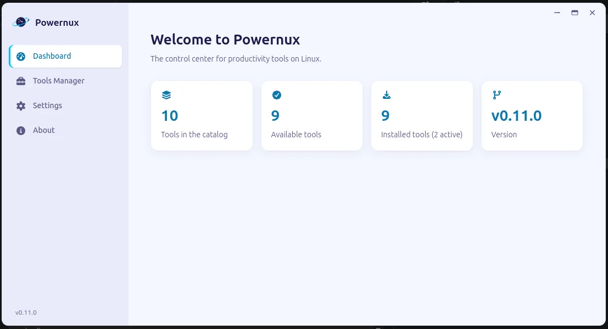

Modular by design
The app ships with no tools. Open Tools Manager, click Download on what you need — tools are fetched from GitHub, verified and updated automatically.
10tools in the catalog
1 clickinstall · update · remove
Powernux brings the utilities you use every day into one modern app — clipboard history, pinned windows, voice typing, an AI that explains your errors, focus mode and more. Install only the tools you need. They run in the background, Powernux stays out of the way.
Pick your system — the terminal shows exactly what to run. Prefer a click? Use the download buttons: your software center opens the package for you.
Linux never had a PowerToys-like hub. Powernux is one — modular, light, keyboard-first and secure by design.
The app ships with no tools. Open Tools Manager, click Download on what you need — tools are fetched from GitHub, verified and updated automatically.
Only active tools run. At login a tiny launcher starts them and exits — no window, no web engine kept in memory. Open Powernux only to change something.
Every tool has a global shortcut that works in any app. Change them freely — Powernux warns you about conflicts.
Each tool is signed with Ed25519 and checked with SHA-256 before it is installed.
The whole interface, remembered across restarts. More languages welcome.
Each tool is an independent program — install it, turn it on, forget it's there until you need it.
Clipboard history with pinning and search. Ignores passwords copied from password managers and can clear itself automatically.
Always-on-top with a colored border, automatic layouts (grid, 70 / 30, columns) and workspaces restored with one shortcut.
Hold the shortcut, speak, release: your words are transcribed, copied and pasted — Groq, OpenAI, AssemblyAI or your own API.
An animated AI face appears in a notch to explain errors and suggest the fix. Groq, OpenAI, Gemini, Mistral, OpenRouter or local Ollama.
Focus sessions and Pomodoro: opens your apps, mutes notifications, blocks distractions, tracks your day in a notch.
A structured notepad: notebooks, headings, checklists and search. Uses zero resources when closed.
Capture an area, a window or the whole screen — copied to the clipboard instantly.
All your projects with their stack and last change. Open them in VS Code or a terminal, or run them in one click.
Sorts a messy folder by type and finds duplicate files — to the trash, with undo.
A desktop AI assistant in a notch, connected to your terminal and your screen.

The dashboard: catalog, available and installed tools at a glance.
One .deb, .rpm or AppImage — the app itself is tiny and contains no tools.
Tools Manager reads the catalog from GitHub. Click Download on the ones you want.
Each archive is checked (SHA-256 + Ed25519 signature), installed and turned on.
Tools run in the background and start with your session. Powernux stays closed.
No account, no analytics, no telemetry. Data only leaves your PC for the service you choose — and with Ollama, not even then.
Yes. Powernux and all its tools are free and open source under the MIT license. Only the optional AI services you connect (for voice typing or the AI assistant) may have their own pricing — and Ollama lets you run the AI assistant locally for free.
Any distribution with GNOME 45 to 50: Ubuntu 24.04+, Debian 13+, Fedora 40+, Linux Mint, Pop!_OS, Zorin, openSUSE and more, on Intel/AMD (x86-64) and ARM64 PCs and laptops. Packages are available as .deb, .rpm and AppImage.
Yes — Powernux is built for GNOME on Wayland. Tools that need to work across applications (window pinning, the notch, voice typing) use a small GNOME Shell extension, so you log out and back in once after installing them.
No. Powernux only opens when you manage your tools. At login, a tiny launcher starts the tools you turned on and exits in about half a second. Notes, for example, uses nothing at all while it is closed.
In the GNOME Keyring, encrypted, on your computer only. They are never sent to the Powernux interface or to GitHub — only to the AI service you selected.
Not yet. The tools are built on GNOME Shell and Wayland, so a Windows version would need every tool rewritten. On Windows, Microsoft PowerToys already covers part of these needs.

Engineering student building tools that make Linux a joy to use. Powernux is open source — issues, ideas and stars are welcome.
Free, open source, and ready in under a minute.